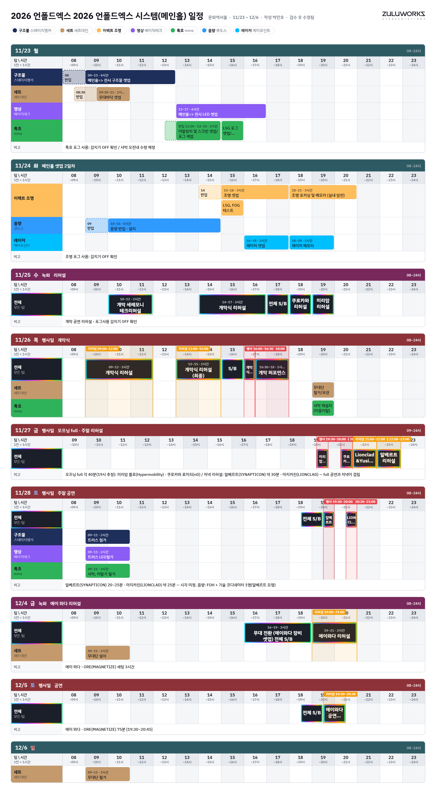
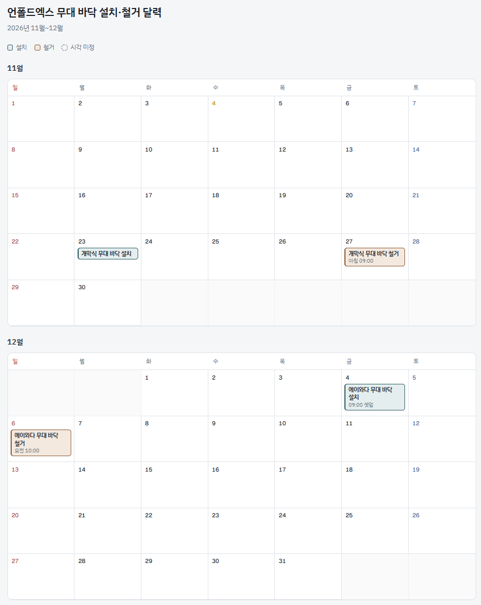

| 작가 · 작품 | 공연 | 리허설 | 셋업 | 시스템 핵심 |
|---|---|---|---|---|
| 미리암 블로HYPERMOBILITY | 11/26 17:00 (20분) 11/27 19:30 (40분) | 11/25 19–20 | 2h vs 슬롯 1h | 레이저 · 샤막 · 스모크 · 완전 암전 |
| 료이치 쿠로카와nD | 11/26 17:30 (20분) 11/27 20:20 (40분) | 11/25 18–19 | 1h | LED 2면 WUXGA · 2.1ch · 무대 믹서 |
| 알베르트 바르케 두란SYNAPTICON | 11/28 19:30 (30분) | 11/27 22–23* | 30분 | 4K HDMI · 103dB · 헤이저 |
| 라이언클래드 & 유시라이브 셋 + 비주얼 | 11/28 20:10 (30분) | 11/27 21–22* | 1h | 스테이지 믹서·DI · 모니터 1 · HDMI |
| 에이와다 · OREMAGNETIZE | 12/5 19:30–20:45 (75분) | 12/4 19–21 | 12/4 16–19 (전시 중) | 백라인 · 마이크 3ch · 카메라 · 받침대 3 |